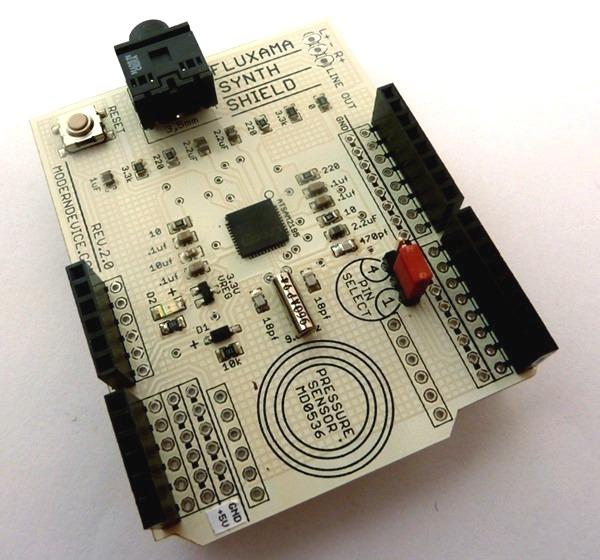
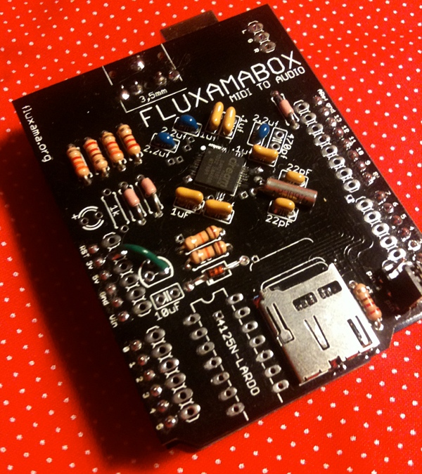
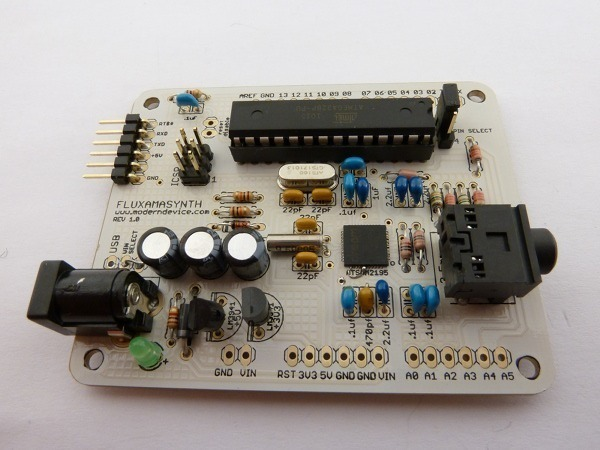

The Fluxamasynth is a full fledged synthesizer on an Arduino shield. 16 channels, 64 voice polyphony provided by an Atmel ATSAM2195. An Arduino library of convenience functions makes it easy to control pitch, chorus, reverb and the built-in equalizer. See the Modern Device website for more details.
Visit Modern Device
Here are some earlier revisions:

